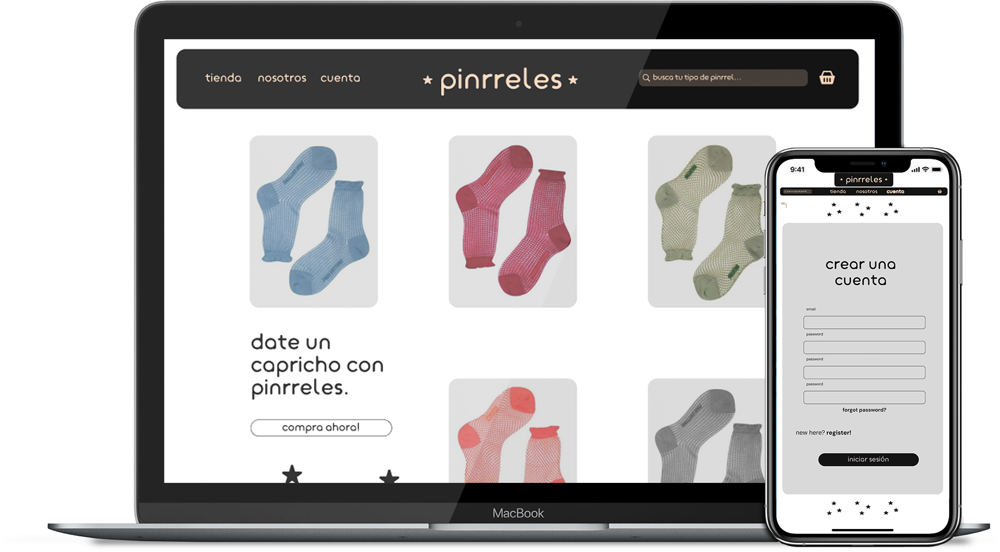

dirección de Arte
me encargo de darle vida a las ideas, creando conceptos visuales impactantes para marcas y proyectos.

diseño gráfico
el diseño es mi pasión. trabajo en branding, diseño web y material gráfico que comunica de manera efectiva.

fotografía
capturo momentos especiales y transformo ideas en imágenes que cuentan historias.